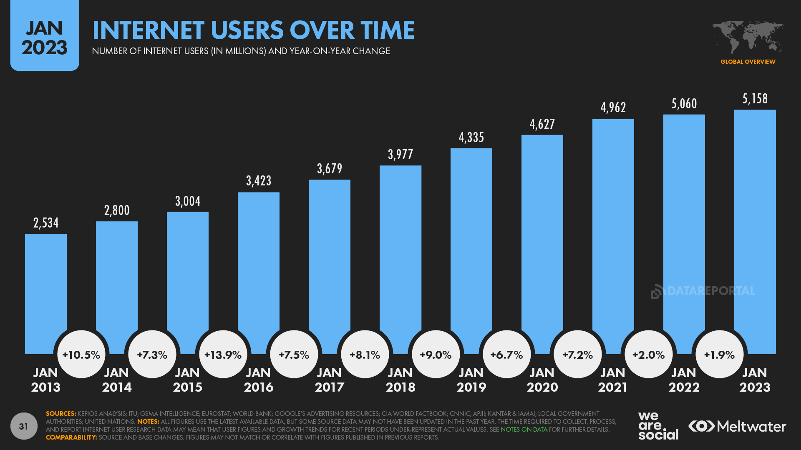

El siglo XXI ha traído consigo no solo una revolución en los cánones sociales, sino también nuevas maneras de interactuar ligadas en gran medida al desarrollo de Internet y las tecnologías de la comunicación. Las nuevas formas de establecer relaciones sociales, buscar pareja o retomar el contacto con viejas amistadas poco o nada tienen que ver con las de antaño. Un nuevo perfil de internauta, ávido de relaciones a escala global, campa por un territorio hasta ahora solo superficialmente explorado: las redes sociales. Se calcula que en 2024 habrá alrededor de 5.000 millones de usuarios mensuales activos procedentes en gran parte de Europa, América y Asia. Su gran expansión en estas áreas geográficas queda reflejada no solo en la penetración, sino también en el tiempo de utilización de las mismas.Aumento de usuarios de Redes Sociales en el último año
